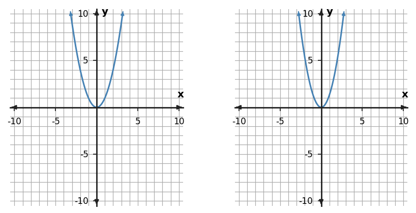
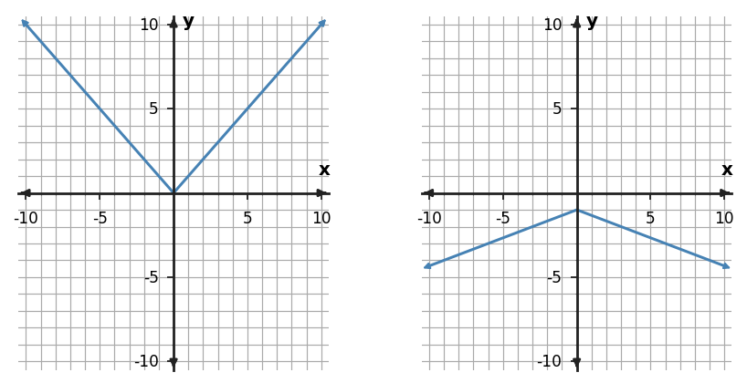

1. Use the graph pair to describe the transformation from the left quadratic to the right quadratic.

2. A student says multiplying $f(x)$ by $-3$ only makes the graph steeper. What transformation information is missing?
3. For $f(x)=x^2$, apply $g(x)=-2f(x)$ to the y-values in the table.
| x | $f(x)$ | $g(x)$ |
|---|---|---|
| -2 | 4 | ? |
| -1 | 1 | ? |
| 0 | 0 | ? |
| 1 | 1 | ? |
| 2 | 4 | ? |
4. For $f(x)=|x|$, does the table match $g(x)=2f(x)-1$? Assess the representations.
| x | $g(x)$ |
|---|---|
| -2 | 3 |
| -1 | 1 |
| 0 | -1 |
| 1 | 1 |
| 2 | 3 |
5. Describe the transformation from $y=x^2$ to $y=-\frac12x^2$.
6. The right graph is claimed to represent $g(x)=-\frac{1}{3}|x|-1$ when the left graph is $f(x)=|x|$. Assess the claim.
